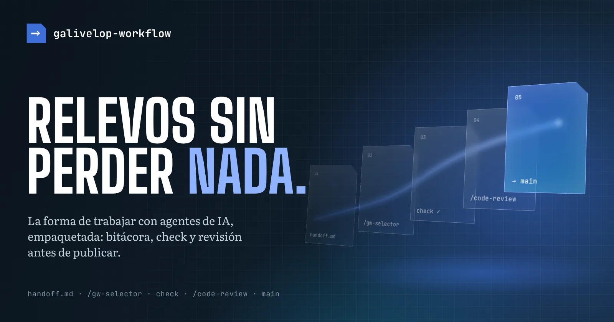

Galivelop · Novedades
Nº 03 · En desarrollo

Publicada el 13 de noviembre
Galivelop-workflow 0.6.0
Apunta los tokens por sesión y modelo
Recomienda modelo y esfuerzo para cada tarea
Revisa por bloques las ramas largas
Corre el check en paralelo
zeldris.github.io/Portal-Galivelop/novedades
Noviembre de 2026